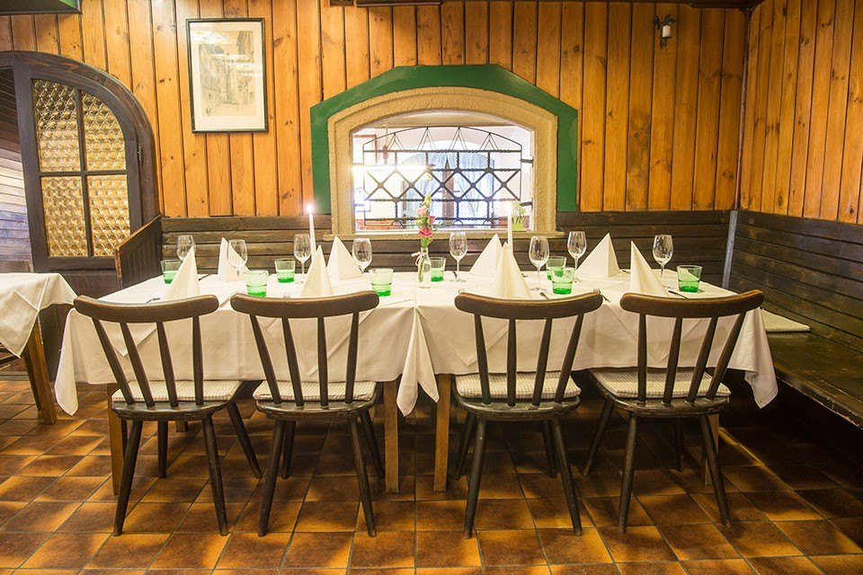
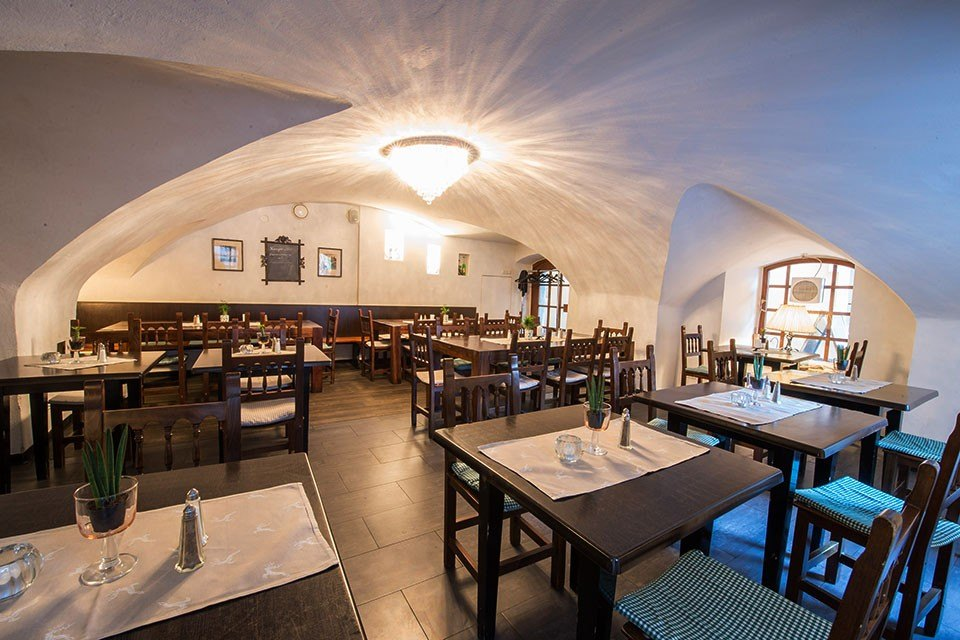
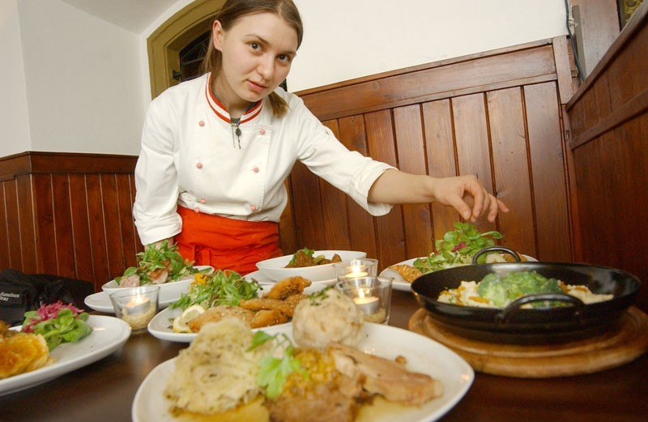
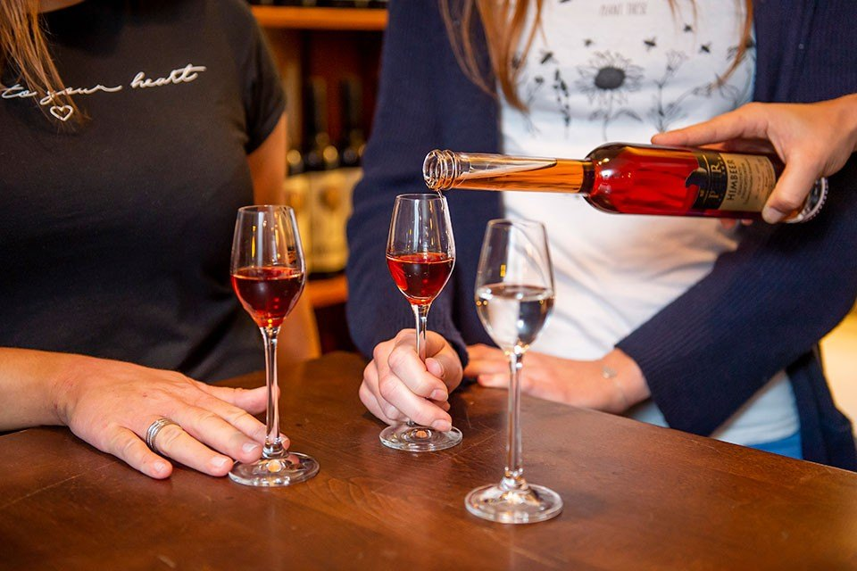

Die Stube
Gedeckte Tafel unter Butzenfenstern und Holzvertäfelung — der Raum, in dem seit 1934 gegessen wird.
Unverbindliche Gestaltungs-Vorschau · keine offizielle Website der Herzl Weinstube · erstellt von AVOS Solutions
Prokopigasse 12 · Mehlplatz · Graz
Seit 1934 wird hier steirisch gekocht — Backhenderl, Bauernbratl und Kürbiscremesuppe, mitten in der Grazer Altstadt.

Hereinspaziert seit 1934
Robert Herzl eröffnete hier 1934 seine Weinstube, in einem Haus aus dem 17. Jahrhundert am Mehlplatz. Gekocht wird bis heute steirisch und bodenständig — aus Zutaten, die zum allergrößten Teil aus der Umgebung kommen.
Wir haben Montag bis Sonntag und an Feiertagen geöffnet. Die Räumlichkeiten bieten in ihren unterschiedlichen Größen den Rahmen für Zweisamkeit ebenso wie für Familienfeste und Firmenfeiern.


Wofür man herkommt
Für unser Backhenderl verwenden wir ausschließlich maisgefütterte Bauernhühner von Kicker. Ein halbes steirisches Backhenderl steht mit € 13,90 auf der Karte, der Steirische Backhenderlsalat mit gebackenen Hühnerstreifen auf bunten Blattsalaten mit € 15,50.
Für größere Runden gibt es das Backhenderlbuffet ab sechs Personen — als Gutschein ab € 85,20 auch zum Verschenken.
Vier Räume
Stube, Stammtisch, Gewölbe und Gastgarten — jeder Raum hat seine eigene Größe und seinen eigenen Ton.
Gedeckte Tafel unter Butzenfenstern und Holzvertäfelung — der Raum, in dem seit 1934 gegessen wird.
Runder Tisch, grüne Vorhänge, Vertäfelung: für Runden, die nicht auf die Uhr schauen.

Ein Gewölbe aus dem 17. Jahrhundert, eingedeckt für größere Gesellschaften.

Innenhof unter dem Baum, mitten in der Altstadt und trotzdem aus dem Trubel heraus.
Montag bis Freitag, 11:00–15:00 Uhr
Sie wählen, was Sie brauchen — Gericht, Suppe, Salat und Dessert einzeln kombinierbar. Die Zutaten stammen von heimischen Lieferanten, und es ist immer etwas Vegetarisches dabei.


Weinstube
Unsere Weißweine kommen aus der Steiermark und aus Niederösterreich, die Rotweine aus dem Burgenland. Zu jedem Gericht auf der Karte steht, was die Herzl dazu trinkt. Die Edelbrände brennt Günther Peer in Leitring.